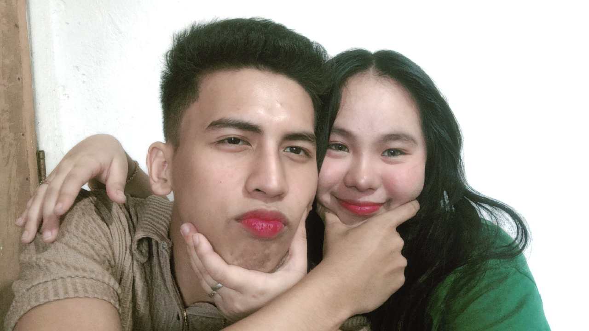
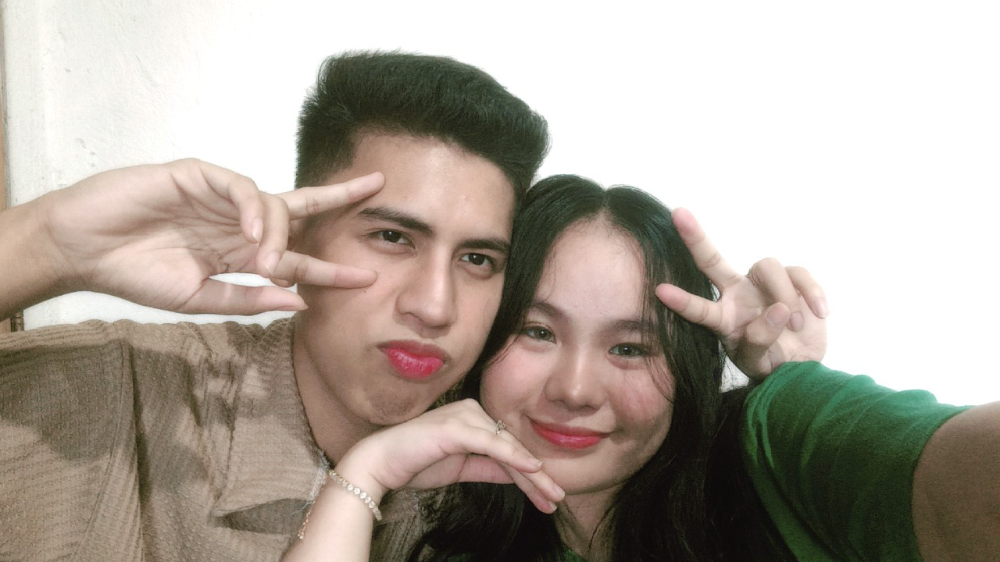

Hi baby ko HAPPY HAPPY 1 YEAR ANNIVERSARY
satin baby ko pero april 11 pa lang baby
HAHAHAHA ang advance ko baby noh. Gusto ko
po kasi magawa agad to baby paka mas
maayos po di tulad nung unang gawa ko po.
di mo alam baby para sayo to noh kala mo
nagpapractice lang ako mag code baby
inuna ko na po ito baby para mas prepare
naman po ayoko naman po na walang maibigay
sayo baby ko pero im trying my best baby
para mabigyan ka ng gift kaya ko rin to
ginawa agad baby para incase na wala po
talaga ako mabigay.

pero yun na nga baby ko nag aalala pa rin
ako sayo baby ko natatakot parin ako nung
muntik kanang masaksak ng tito mo baby ko
ayoko ko mawala ka baby mahal kita sobra
baby ko.

HI BABY KONG MAGANDA IM BACK!
Its june 7, 2024 , friday, time is 10:46pm
ginagawa ko na po uli baby ko kasi malapit
na po baby ko eh ilang buwan na lang po baby
ko, pero ngayong araw ay nakakalungkot dahil
ang anak nating si Aya may sakit baby ko.
Sa totoo lang baby ko hindi ko po alam pano
kita papasayahin ngayon alam kong sobrang
pagod, lungkot, at takot mo ngayon baby ko,
Alam ko napakahalaga sayo ni Aya baby ko
and alam ko na ayaw mong mawala si Aya kaya
baby ko i will do my best na matulungan kita
kay Aya baby ko.